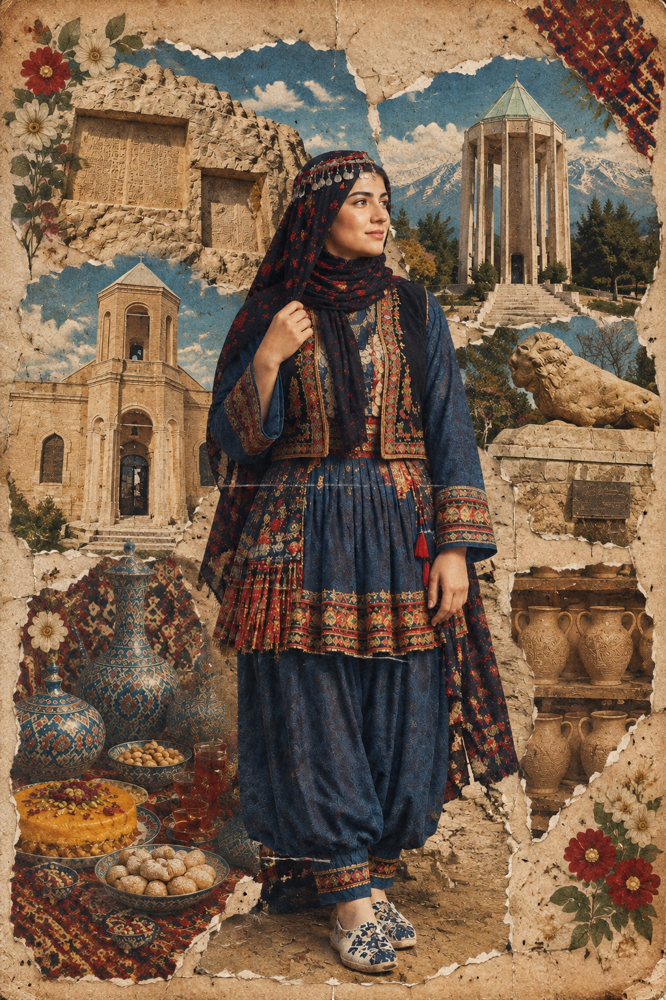
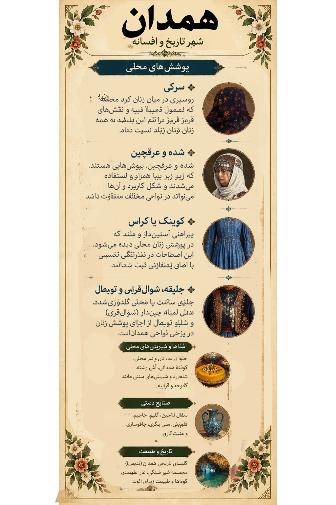

۱. تصویر همدان؛ روایت یک سرزمین
1. Hamedan in Art: A Land's Story
در این اثر، پوشش آبی الهامگرفته از نمونههای محلی، گیوه، سفال لالجین، خوراکهای سنتی و نشانههایی از تاریخ همدان کنار هم قرار گرفتهاند؛ عناصری که بخشی از حافظه فرهنگی این سرزمین را روایت میکنند.
This artwork brings together a blue outfit inspired by local examples, giveh footwear, Lalejin pottery, regional foods, and historic landmarks of Hamedan.

اثر تصویری همدان از مجموعه «ایران، هزار رنگ»
The Hamedan artwork from “Iran, A Thousand Colors”
از نقش پارچه و بافت گیوه تا سفال لالجین و یادگارهای هگمتانه؛ هرکدام روایتی از پیوند مردم با سرزمینشان است.
From textile patterns and woven giveh to Lalejin pottery and ancient Hegmataneh, each tells a story of people's bond with their land.
این تصویر، اثر هنری مجموعه است؛ توضیحات این صفحه برای معرفی فرهنگی و تاریخی استان ارائه شدهاند.
This is the collection's artwork; the text provides cultural and historical context.
۲. پوشش زنان همدان؛ تنوع در جزئیات
2. Women's Dress in Hamedan: Diversity in the Details
پوشاک سنتی زنان همدان یک دست لباس یکسان برای تمام استان نیست. همدان در محل پیوند حوزههای فرهنگی فارس، ترک، کرد و لر قرار دارد و پوشش در نواحی مختلف، با توجه به زبان، جغرافیا و شیوه زندگی تفاوت داشته است. در توصیفهای منتشرشده، سرپوشهایی مانند چارقد و «سرکی» و نیز پیراهن، جلیقه و دامن چیندار دیده میشود.
Traditional women's clothing in Hamedan was not uniform across the province. At the meeting point of Persian, Turkic, Kurdish, and Luri cultural areas, dress varied by language, geography, and way of life. Published descriptions mention head coverings such as Saraki, as well as a long shirt, vest, and pleated skirt.

لیبل اختصاصی همدان؛ راهنمای تصویری پوشش، جاذبهها و خوراک محلی
Hamedan's exhibition label: a visual guide to clothing, landmarks, and food
سرکی؛ پوشش سر در نواحی کردنشینSaraki: Headwear in Kurdish Areas
منبع انگلیسی Visit Iran، سرکی را نوعی روسری در میان زنان کرد منطقه معرفی میکند که معمولاً زمینه تیره و نقشهای قرمز دارد. این نام را نباید به همه زنان استان نسبت داد.
Visit Iran describes Saraki as a headscarf worn by Kurdish women in the region, often dark with red patterns. It should not be generalized to all women in the province.
شده و عرقچینShadeh and Skullcap
در توصیفهای پوشاک محلی، از «شده» و عرقچین بهعنوان پوششهایی که زیر یا همراه روسری استفاده میشدند یاد شده است. شکل و کاربرد آنها میتوانست میان نواحی تفاوت داشته باشد.
Local clothing descriptions mention Shadeh and skullcaps worn beneath or with a scarf. Their form and use could vary by area.
کوینک یا کراسKevink or Keras
در منبع Visit Iran، کوینک یا کراس بهعنوان پیراهنی آستیندار و بلند توصیف شده است. این اصطلاحات محلی در نوشتار انگلیسی با چند املای متفاوت ثبت شدهاند.
Visit Iran describes Kevink or Keras as a long-sleeved, long shirt. These local terms appear with different English transliterations.
جلیقه، شوالقری و تومبالVest, Shoval Qeri, and Toombal
در همان توصیف، جلیقه ساتن یا مخمل گلدوزیشده، دامن کوتاه چیندار با نام شوالقری و شلوار تومبال از اجزای پوشش زنان معرفی شدهاند؛ نه نسخهای ثابت برای تمام شهرستانها.
The same account mentions an embroidered satin or velvet vest, a short pleated skirt called Shoval Qeri, and trousers known as Toombal. This is not a fixed outfit for every district.
برای نسبتدادن هر جزء لباس به روستایی مشخص، به عکس مستند، پژوهش مردمشناختی یا تأیید افراد آگاه محلی نیاز داریم.
Linking a garment to a specific village requires documentary photographs, ethnographic research, or local confirmation.
۴. تاریخ، معماری و طبیعت
4. History, Architecture, and Nature
هگمتانه؛ شهر باستانیHegmataneh: The Ancient City
یونسکو در معرفی «هگمتانه و مرکز تاریخی همدان» به پیشینه چند هزار ساله سکونت در این شهر و اهمیت آن در دوره مادها و حکومتهای بعدی اشاره میکند. این مجموعه در سال ۲۰۲۴ در فهرست میراث جهانی ثبت شد.
UNESCO's “Hegmataneh and Historical Centre of Hamedan” entry highlights nearly three millennia of settlement and its importance under the Medes and later dynasties. It was inscribed in 2024.
کتیبههای گنجنامهGanjnameh Inscriptions
کتیبههای گنجنامه در دامنه الوند، یادگار دوره هخامنشیاند و به داریوش و خشایارشا نسبت داده میشوند. این سنگنوشتهها از نمادهای تاریخی همداناند.
The Ganjnameh inscriptions on Mount Alvand date to the Achaemenid period and are associated with Darius I and Xerxes I.
آرامگاه بوعلیسینا و باباطاهرMausoleums of Avicenna and Baba Taher
آرامگاه بوعلیسینا یادآور جایگاه علمی این دانشمند ایرانی است و آرامگاه باباطاهر با شعر و دوبیتیهای او پیوند دارد.
Avicenna's mausoleum commemorates the Iranian philosopher and physician; Baba Taher's mausoleum is associated with his poetry.
گنبد علویان و شیر سنگیAlavian Dome and Stone Lion
گنبد علویان از بناهای برجسته دوره سلجوقی و نمونهای ارزشمند از آجرکاری و گچبری ایرانی است. شیر سنگی نیز از یادمانهای شناختهشده شهر است.
The Alavian Dome is a notable Seljuk monument and an example of Iranian brickwork and stucco. The Stone Lion is another well-known city landmark.
الوند و غار علیصدرMount Alvand and Ali-Sadr Cave
کوهستان الوند و چشماندازهای اطراف آن هویت طبیعی همدان را شکل میدهند؛ غار آبی علیصدر نیز از جاذبههای شناختهشده استان است.
Mount Alvand and its landscapes shape Hamedan's natural identity; Ali-Sadr water cave is another major attraction.
۷. منابع و مطالعه بیشتر
7. Sources and Further Reading
برای تدوین این صفحه از منابع فارسی و انگلیسی استفاده شده است. منابع پوشاک، گردشگری، صنایعدستی و میراث تاریخی جداگانه انتخاب شدهاند.
This page draws on Persian- and English-language sources covering clothing, tourism, handicrafts, and historical heritage.
منابع ایرانی و فارسیIranian and Persian-Language Sources
-
Discover Iran – همدان
— خوراک محلی، سفال لالجین، منبت ملایر، گلیم نهاوند و جاذبههای استان.
— Local cuisine, Lalejin pottery, Malayer woodcarving, Nahavand kilim, and attractions.
-
یگان میراث ایران – گنبد علویان
— معرفی تاریخی و معماری گنبد علویان.
— Historical and architectural information about Alavian Dome.
-
خبرگزاری تسنیم – جاذبههای گردشگری همدان
— آثار تاریخی، جاذبههای طبیعی، خوراک و صنایعدستی استان.
— Historic sites, natural attractions, food, and handicrafts.
منابع انگلیسی و بینالمللیEnglish and International Sources
یادداشت پژوهشی: منابع گردشگری برای معرفی عمومی مناسباند؛ برای ثبت قطعی پوشش یک روستا یا شیوه خاص دوخت، عکس مستند، پژوهش مردمشناختی یا تأیید میراث فرهنگی همان منطقه لازم است.
Research note: Confirming a specific village costume or sewing tradition requires documentary photographs, ethnographic research, or local heritage confirmation.